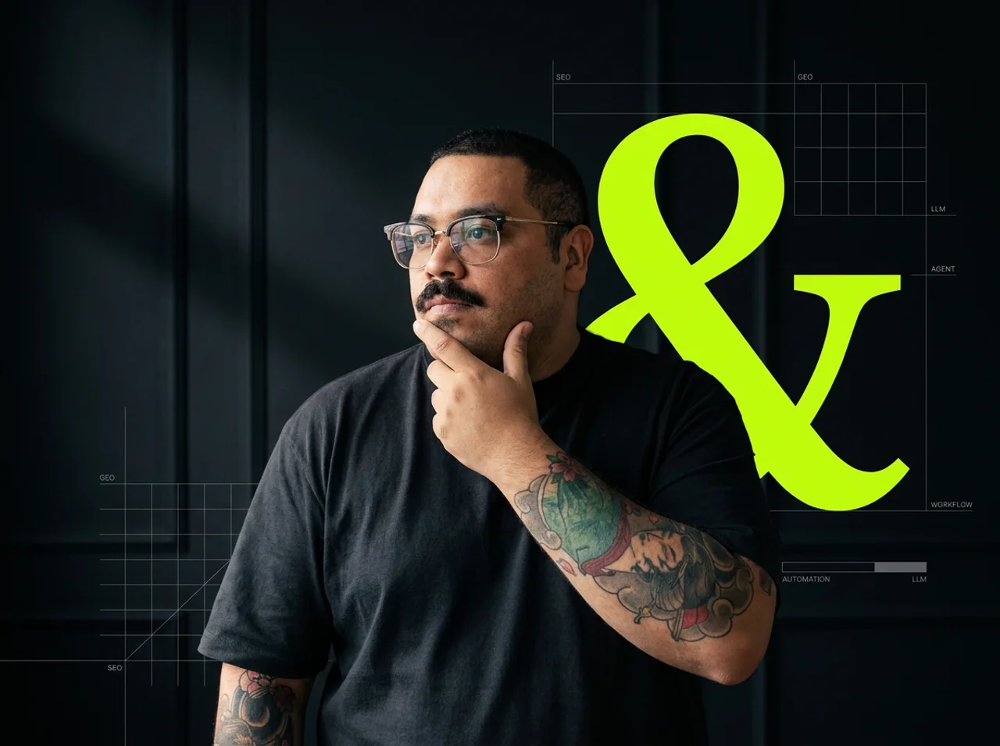

14 anos de marketing digital. Zero papo de agência.
Marketing & IA sob medida, sem intermediário

02/05
└ QUEM SOU
Jonesson Oliveira
Sozinho eu cuido de estratégia, execução e entrega, sem camada de agência no meio. Vi de perto o que faz um negócio ser encontrado (e o que é só modinha de LinkedIn).
└ passagem por
03/05
└ ANOS DE ESTRADA
14
Tempo suficiente pra separar o que gera resultado do que é só brainstorm bonito de agência.
04/05
└ NA PRÁTICA
“Agência vende processo. Eu entrego resultado, direto.”